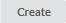

Best Server Analysis¶
The Best Server Analysis function only applies to PMP networks. Use the Best Server Analysis function to automatically connect the Subscriber Sites in the project to the Network Device that offers the best receive level for the specified requirements. During the analysis the subscriber site is tested against each network device that is in range. The analysis tests a range of products at the subscriber, based on an ordered selection, along with all of the antenna combinations that the product supports. Once the analysis is complete the PMP links can be created.

The network layer of network devices must be defined prior to running this analysis.
Best Server Analysis Panel¶
The current network device equipment settings in the project determine which product families appear in the Best Server Analysis configuration panel. The Best Server Analysis is run for all network devices in the network.
Each product family has separate settings for:
Target SM Mode: Select the minimum modulation mode required at the SM. This modulation mode is used to calculate the fade margin for the link.
Target SM Fade Margin: Set the minimum fade margin that is required at the Target SM Mode to consider the link valid (Not available for cnReach).
There is a choice of how to define the subscriber antenna height for the analysis:
Use subscriber site maximum height: Select this option to use the heights defined in the subscriber site table
Use height above ground: Select this option to use a fixed height above ground level and enter the required height in the Antenna Height Above Ground box. Note that if using clutter this may put the subscriber below the top of the clutter.
Use minimum height above clutter: This option is only available if clutter is enabled. Select this option to prioritize a height above the clutter, enter the height in the Min Antenna Height Above Clutter box. Also enter a height in the Antenna Height Above Ground box, which gives a minimum height above ground that is used if the Clutter Height + Min Antenna Height Above Ground is lower than Antenna Height Above Ground.
If the Target SM Mode is lower than the Min Mod Mode Required or the Target SM Fade Margin is not large enough to support the Min Availability Required, when the links are created they may not meet the performance requirements for the PMP links.
In the Subscriber Product Preferences list tick all SM products to be used in the analysis, only subscriber products that can be supported by the current network device configurations are displayed. Set the order in which the products are prioritized. To reorder, select an item and click the up and down arrow buttons. There must be at least one subscriber product per product family otherwise the analysis cannot be started.
SM Products are tested by the order shown in the Subscriber Product Preferences and the antenna gain. The analysis for an individual subscriber site stops as soon as a product and antenna gain combination meets the performance criteria selected. If a product with a higher gain antenna is higher in the order than a lower gain antenna, the lower gain antenna will not be tested. Ensure that lower gain antennas are higher in the list.
Best Server Analysis Configuration¶
When the subscriber product selection is valid, the button is enabled. Tick the Omit connected places? checkbox to ignore any subscriber places that are already connected to a network device. This is useful when adding new subscriber sites to an existing project or running the analysis for a different configuration.
The analysis only considers the RF performance for an individual subscriber module. The overall performance and loading of the network device is the responsibility of the network planner.
The progress is displayed, (Analysis Progress) at the bottom of the results table.
Projects with a large number of network devices and subscriber sites may take a long time to process, particularly when there are a range of products and antennas to test for each site.
Analysis Progress¶
The equipment configurations are disabled when the analysis is running to prevent modifications to the project.
While the Best Server analysis is running, the analysis can be stopped by clicking the button which is available beside the Go button. When the analysis is stopped any interim results are deleted from the results table.
Stop Analysis¶
When the analysis is complete the results are displayed in the table. The top three network devices that achieve the design requirements are shown for each subscriber site, not all subscriber sites will have multiple options. Any subscriber sites that are unable to connect to any network device with the required performance appear in red.
Click on the  in the Best Server window to export the results to a CSV file. To change which ND the subscriber connects to double click in the Selected ND cell for an individual subscriber.
in the Best Server window to export the results to a CSV file. To change which ND the subscriber connects to double click in the Selected ND cell for an individual subscriber.
Best Server Analysis Results¶
The Results Summary panel provides information on the connection status of the subscriber sites. Large projects are processed in batches and the results are updated in the summary table as the processing progresses.
Best Server Results Summary¶
Select the  button to add all of the PMP Links to the project. If there are existing subscriber modules in the project then the Update Subscriber Modules dialog will appear.
Delete Existing: Select to remove the existing subscriber modules and replace with the new best server options.
Update Existing: Select to update existing subscriber modules to the current configuration from the best server results. This may change the product, antenna and antenna height settings for matching subscriber modules. Where the new analysis connects a site to a different ND a new subscriber module will be created to that ND without deleting the existing subscriber module. This may result in multiple links from each subscriber site.
Cancel: Select to abandon the command without modifying the project.
Update Subscriber Modules¶

Best Server Analysis results are not stored in the LINKPlanner project file. If the project is discarded without applying the results then the analysis results will be lost.